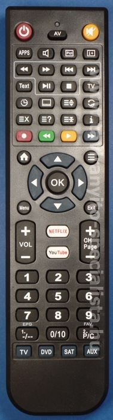

Speciális távirányítók
Mobil: +36-30-7562289 /Viber/
Szinte minden gyártónál látható az alábbi 3 távirányító az eredeti mellett utángyártott típusként. Ezeket a távirányítókat főleg tévék, DVD lejátszók, házimozik, és egyéb eszközök irányításához lehet használni. Több különböző készülék kezelésére is alkalmasak.
 |
A távirányítóknak néhány jellemzőjét, illetve tulajdonságát írnám itt le, mely információk talán a használatkor jól jöhetnek. A távirányító memóriája alapvetően teljesen üres. Ez azt jelenti, hogy nem rendelkezik előre programozott lehetőséggel, tehát nem lehet rajta beütni különböző számjegyekből álló kódokat, hogy bizonyos gyártmányok eszközeit kezeljük vele. Ezt a távirányítót számítógép segítségével speciális infraporttal lehet feltölteni. Természeten ezzel nem Önnek kell bajlódnia. Én elvégzem ezt a feladatot, így egy olyan távirányítót vehet kézbe, amibe csak az elemeket kell behelyezni és rögtön működőképes lesz. Tulajdonképpen a távirányítón lévő feliratokat megnézve nem látunk különösebben érdekes dolgot rajta, leginkább egy tévé távirányítójára emlékeztet. Az alsó sor feliratai utalnak univerzális távirányítókon található hasonló készülékválasztó gombokra. Ennél a távirányítónál is pontosan ez a szerepük, de itt a fixen beltöltött programok átváltását végzik. Aki csak egy készülékhez használná ezt a távirányítót, annak ezekre a gombokra nem lesz szüksége, mivel a négy lehetséges hely mindegyikére ugyanaz a program kerül. Az előző mondatból adódik, hogy négy lehetséges helyre kerülhetnek különböző programok, vagyis a távirányító maximálisan 4 eszközt kezelhet, eszközönként maximálisan 86 funkcióval. Az alsó sorban a négy választógomb feliratai csak tájékoztató jellegűek, mivel bármelyikre bármilyen készüléket fel lehet programozni. Ezeket természetesen nem lehet konkrét funkcionális gombokként használni, mert a megnyomásuk alkalmával nem adnak ki infravörös jelet, csak a távirányító belső átkapcsolását végzik egyik készülékről a másikra. A jobb felső sarokban található SHIFT gombnak is más a szerepe. Ez a gomb hasonlatos a számítógép billentyűzetén található ugyanilyen jelölésű gombhoz. A különbség csak annyi, hogy a tasztatúrán folyamatosan kell nyomni ezt a gombot egy másik billentyű leütésének a végéig, itt viszont csak egyszer kell megnyomni. Ekkor a POWER funkció alatt lévő piros lámpácska kigyulladása fogja jelezni, hogy a távirányító SHIFT állapotban van. Ez pontosan azt jelenti, mint a fenti tasztatúra példánál, hogy a maradék 43 funkciógomb más jelet tud kiadni, mint a SHIFT bekapcsolása nélkül. Így jön ki a 2 x 43=86 maximális elérhető funkció készülékenként, ami bőven elegendő lesz. Persze vannak olyan eredeti távirányítók, melyeken 43 gombnál is több van, de a 86 funkciót szinte biztos nem érik el. Vagyis az eredeti távirányító összes funkciója ráfér erre a távirányítóra. A SHIFT módot egyébként csak 8 másodpercig tartja a távirányító, vagyis ennyi időn belül használhatjuk ezeket a másodlagos funkciókat, utána automatikusan kilép ebből. Természetesen minden új gombnyomás a SHIFT módon belül visszaállítja a belső számlálót. Persze van olyan eset, amikor nem szeretnénk 8 másodpercet várni a kilépésre, ekkor rögtön kiléphetünk a SHIFT gomb újbóli megnyomásával. Mi az a másodlagos funkció? Nyilván észszerűnek tűnhet, hogy a legtöbbször használt funkciók eléréséhez ne kelljen SHIFT-et használni, mert az kicsit macerás. |
 |
Ezt 43 funkcióig nem is kell megtenni. Illetve mégis csak célszerű bizonyos esetekben igénybe venni. Például különböző funkciók elrejtéséhez, melyeket nem lenne praktikus direktben elérni. Esetleg ritkábban használt funkciók eltárolásához. Nézzünk az előbbire egy példát. A menü funkció elrejtése azokban az esetekben jöhet jól, amikor nem akarjuk, hogy a felhasználó véletlenül megnyomja ezt a gombot és elállítsa a tévé alapvető beállításait. Panziókban, hotelekben gyakori probléma ez. A vendégek maguk akarják megkeresni a kedvenc csatornáikat. A nagyi vagy a gyerekek pedig véletlenül belépve a menübe, akár újra is hangolhatják a készüléket, vagy más nemkívánatos beállítást kapcsolhatnak be. Egy másik általam használt megoldás, melyet gyakorlatilag az összes helyettesítő DVD távirányítón alkalmaztam az volt, hogy a lemezkiadási funkciót a SHIFT+POWER gombra helyeztem. Tehát a lemezkiadásnál előbb a SHIFT gombot, majd utána a POWER gombot megnyomva nyílik csak ki a tálca. Ez nagyban meggátolja, hogy egy véletlenszerű nyitás történjen a távirányítóval, mely filmnézés közben lehet bosszantó. A fenti mondatok azt sejtetik, hogy a funkciók szabadon programozhatóak bármelyik gombra. Ez így van. Bármilyen funkció bármelyik gombra rávihető. Akár több gomb is tartalmazhatja ugyanazt a funkciót. Ennek is van értelme, ugyanis sok eredeti távirányítónál először mondjuk a hangerő vagy a programléptető, netán a bekapcsoló adja meg magát. Itt lehetőség van dupla vagy akár tripla hangerő és programléptetők kialakítására a többi elhelyezhető funkció rovására. Így amennyiben idővel elkopik az egyik gomb, akkor használhatjuk a másikat. Sok olyan egyszerű távirányító van, mely nem tartalmaz 20-30-nál több nyomógombot. Miért legyen a többi üres ezen a távirányítón? A gyakrabban használt gombokat lehet ismételni a fennálló szabad helyekre. Ezzel a távirányító élettartama egyértelműen növekszik. Természetesen ez a rugalmasság azt jelenti, hogy egyedi igényeknek is teret adhat. Ezeket a programokat saját elhelyezési mintában készítem el, ami viszont nem biztos, hogy mindenkinek megfelel. Ekkor kérésre a megadott funkciókat áthelyezem és egy 15 másodperces szoftverfrissítéssel a probléma megoldódik. A tulajdonságokat jobban átgondolva megoldható még, hogy akár elkészíthető egy eredeti távirányító tetszőlegesen lebutított változata, mely az alsó sor első három gombjára van programozva, viszont az AUX-on a teljes funkcionalitás elérhető. Egyébként az elemek behelyezése után a távirányító alaphelyzete a bal alsó pozíció, vagyis a TV állás. A webáruházamban található ilyen távirányítók saját program alapján futnak, így hajszálpontosan tudni lehet, hogy az eredeti távirányító funkcióit merre lehet megtalálni az új távirányítókon. Ez az adott távirányítónál legtöbbször egy pdf kiterjesztésű fájlként elérhető, és ez A4-es méretben kinyomtatható. A mellékelt táblázat nagyon fontos a készülék kezelésekor, ugyanis, ha nem vagyunk tisztában a funkciók helyzetével, akkor akár lehetetlenné válhatnak bizonyos beállítások elvégzése. Egy ilyen általam készített programtáblázat itt látható. |
|  | A táblázat bal oldali oszlopában az új távirányítón található nyomógombok jelöléseit látjuk. A mellette lévő két oszlopban pedig az eredeti távirányító funkciói helyezkednek el. Ezek egy része a "direct" oszlop alatt, a maradék pedig a "shift" oszlop alatt található. Értelemszerűen a "direct" oszlop alatt található gombokat közvetlen megnyomással, míg a "shift" oszlop alatt lévőket pedig a SHIFT gomb előzetes megnyomásával lehet elérni. A táblázat celláiban lévő eredeti funkciókat kivetítve a bal szélső oszlopra kiderül, hogy a keresett nyomógombokat merre találjuk az új távirányítón. Persze nem mindig van szükség a SHIFT gomb használatára. Amennyiben az eredeti távirányítón kevés nyomógomb található, akkor nincsen szükség rá. Leírva talán kicsit bonyolultnak tűnhet, de a gyakorlatban pofonegyszerű. A példatáblázatban esetleg valakit zavarhat, hogy a DVD funkciói a TV főoszlopában van feltüntetve. Ez azért van itt, mert áttekinthetőbb lesz a táblázat, ha az eredeti funkciók közelebb vannak a bal oldali oszlophoz. Egyébként is mivel mind a 4 helyre ugyanaz a készülék került beprogramozásra, a távirányító alsó 4 gombjának nem lesz jelentősége ugyanúgy, mint a táblázat legfelső sorában látható TV, DVD/VCR, SAT, AUX főoszlopoknak sem. Az alábbi példa azt mutatja be, ha a távirányítóban több különböző program szerepel. Ekkor már jelentősége van a készülékválasztó gomboknak, és vele párhuzamosan a táblázatban lévő főoszlopoknak. A SHIFT gombnak egyébként van még egy egyszerű szerepe. Amennyiben jó elemeket helyeznek a távirányítóba jó polaritással, akkor ennek a gombnak a megnyomása után a POWER gomb alatti lámpa értelemszerűen kigyullad. Ez jelzi a shift bekapcsolt állapotát, amiből következtetni lehet az elemek megfelelő helyzetére és állapotára. Csak a felső két képen lévő távirányító rendelkezik SHIFT gombbal. Az alsó képen látható távirányító egyszerűbb, mert nincsen SHIFT billentyűje, ezért csak összesen 4 x 54 funkció eltárolása lehetséges. Tehát egy beprogramozott készülék maximum 54 funkcióval rendelkezhet. Amennyiben ennél több van az eredeti távirányítón, és az összeset szeretnénk eltárolni, akkor egy másik készülékválasztó gombot kell beáldoznunk. Így már csak 2 további eszköz kódjainak fogadására lesz lehetőség. Tehát a bevihető készülékek száma négyről háromra csökken. Az alsó távirányítóra egyébként minden fentebb leírt tulajdonság ráillik, kivéve a SHIFT funkciót. Egyébként a legtöbb esetben az 54 funkció egy készüléknél tökéletesen elegendő. Tulajdonképpen ez a távirányító a felső kettőnek egy modernebb változata, melyet több hasznos nyomógombbal vérteztek fel. Próbáltam alaposan leírni ezeket a távirányítókat. Kérdés esetén szívesen válaszolok. |